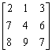

如何使用聯立三元一次程式計算三階伴隨矩陣及逆矩陣
聯立三元一次方程、三伴隨矩陣及逆矩陣有密切關係，因此可以利用聯立三元一次程式計算三階伴隨矩陣及逆矩陣的數值，詳情請參看以下例題:
假設使用分數版聯立三元一次程式
例題1: 計算下列矩陣的逆矩陣。

按 Prog 1 再按 2 EXE 1 EXE 3 EXE (矩陣第一列) 1 EXE (必要)
7 EXE 4 EXE 6 EXE (矩陣第二列) 0 EXE (必要)
8 EXE 9 EXE 7 EXE (矩陣第三列) 0 EXE (必要，顯示行列式為40)
EXE (顯示第一欄 -13/20) EXE (顯示 -1/40) EXE (顯示 31/40)
再按 EXE 2 EXE 1 EXE 3 EXE (矩陣第一列) 0 EXE (必要)
7 EXE 4 EXE 6 EXE (矩陣第二列) 1 EXE (必要)
8 EXE 9 EXE 7 EXE (矩陣第三列) 0 EXE (必要，顯示行列式為40)
EXE (顯示第二欄 1/2) EXE (顯示 -1/4) EXE (顯示 -1/4)
再按 EXE 2 EXE 1 EXE 3 EXE (矩陣第一列) 0 EXE (必要)
7 EXE 4 EXE 6 EXE (矩陣第二列) 0 EXE (必要)
8 EXE 9 EXE 7 EXE (矩陣第三列) 1 EXE (必要，顯示行列式為40)
EXE (顯示第三欄 -3/20) EXE (顯示 9/40) EXE (顯示 1/40)
因此，
例題2: 計算下列矩陣的伴隨矩陣。
先計算行列式的值
按 Prog 1 再按 2 EXE 1 EXE 3 EXE (矩陣第一列) EXE (必要)
7 EXE 4 EXE 6 EXE (矩陣第二列) EXE (必要)
8 EXE 9 EXE 7 EXE (矩陣第三列) EXE (必要，顯示行列式為40)
按AC 終止程式
按 Prog 1 再按 2 EXE 1 EXE 3 EXE (矩陣第一列) 40 EXE (必要)
7 EXE 4 EXE 6 EXE (矩陣第二列) 0 EXE (必要)
8 EXE 9 EXE 7 EXE (矩陣第三列) 0 EXE (必要，顯示行列式為40)
EXE (顯示第一欄 -26) EXE (顯示 -1) EXE (顯示 31)
再按 EXE 2 EXE 1 EXE 3 EXE (矩陣第一列) 0 EXE (必要)
7 EXE 4 EXE 6 EXE (矩陣第二列) 40 EXE (必要)
8 EXE 9 EXE 7 EXE (矩陣第三列) 0 EXE (必要，顯示行列式為40)
EXE (顯示第二欄 20) EXE (顯示 -10) EXE (顯示 -10)
再按 EXE 2 EXE 1 EXE 3 EXE (矩陣第一列) 0 EXE (必要)
7 EXE 4 EXE 6 EXE (矩陣第二列) 0 EXE (必要)
8 EXE 9 EXE 7 EXE (矩陣第三列) 40 EXE (必要，顯示行列式為40)
EXE (顯示第三欄 -6) EXE (顯示 9) EXE (顯示 1)
因此，

返回 CASIO fx-3650P II及fx-50FH II程式集